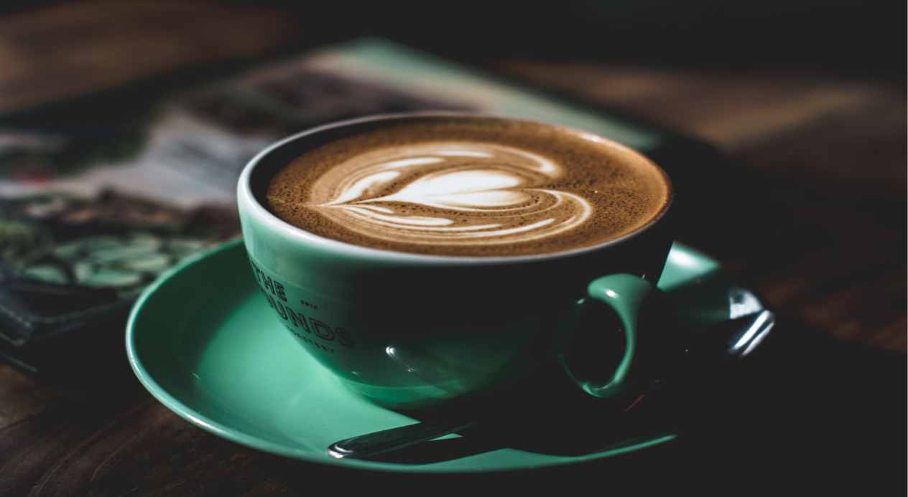

B I B .

Our history

coffee history
The history of coffee dates back to the 15th century, and possibly earlier with a number of reports and legends surrounding its first use. The earliest substantiated evidence of either coffee drinking or knowledge of the coffee tree is from the early 15th century, in the Sufi monasteries of Yemen, spreading soon to Mecca and Medina. By the 16th century, it had reached the rest of the Middle East, South India (Karnataka), Persia, Turkey, the Horn of Africa, and northern Africa. Coffee then spread to the Balkans, Italy, and to the rest of Europe, as well as Southeast Asia and despite the bans imposed during the 15th century by religious leaders in Mecca and Cairo, and later by the Catholic Church.

Production
Coffee berries and their seeds undergo several processes before
they become the familiar roasted coffee. Berries have been traditionally
selectively picked by hand; a labor-intensive method,
it involves the selection of only the berries at the peak of ripeness.
More commonly, crops are strip picked, where all berries are
harvested simultaneously regardless of ripeness by person or machine.
After picking, green coffee is processed by one of two methods—the
dry process method, simpler and less labor-intensive as the berries
can be strip picked, and the wet process method, which incorporates
fermentation into the process and yields a mild coffee.
About us
Founded in 2010 in Amsterdam, ETQ derived under the mindset of eliminating over-accessorized branding and focusing primarily on letting the quality of the product speak for itself.
Address
Singel 465
1012 WP Amsterdam
The Netherlands
Contact
Email us
Message us on WhatsApp
+31 (0) 202 615 614
Info
Shipping info
Careers
Wholesale
Follow us
Instagram
Facebook